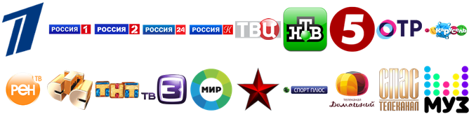

Вопросы и ответы

Какие телеканалы доступны?

Будут ли добавлены дополнительные каналы?
Точная дата начала вещания третьего пакета каналов (мультиплекса) неизвестна. Для начала должны быть определены принципы формирования мультиплекса на государственном уровне. после чего будут организованы конкурсы для определения каналов-участников третьего мультиплекса. Только после того, как станет известен состав третьего цифрового пакета, РТРС сможет приступить к его трансляции. Правительственная комиссия по развитию телерадиовещания отложила рассмотрение вопроса о принципах формирования третьего мультиплекса до 2018 года.
Почему без абонентской платы? Как это возможно? Зачем нужна приставка?
С 2009 года Россия начала переход на новый европейский стандарт эфирного цифрового вещания DVB-T2. Цифровое вещание является современной альтернативой безнадежно устаревшей технологии аналогового телевидения. Так же, как и аналоговый, цифровой сигнал распространяется по всей территории РФ бесплатно. Цифровой телевизионный приёмник D-Color выступает в роли маленького компьютера, который преобразует цифровой сигнал в понятный для старых телевизоров аналоговый сигнал.
Что необходимо для того чтобы смотреть цифровое эфирное телевидение?
Для того чтобы смотреть "цифру" необходима антенна дециметрового диапазона (наружная, комнатная, общедомовая), цифровой телевизионный приемник и телевизор. В некоторых современных моделях телевизоров уже есть встроенный тюнер DVB-T2.
Достаточно ли комнатной антенны для приема цифрового эфирного телевидения?
Комнатной антенны не всегда достаточно, все зависит от удаленности телевышки на которой установлен передатчик и от расположения вашего дома относительно других зданий. Характеристики антенны, необходимой для уверенного приема индивидуальны, но, если ваша антенна принимает 6 обычных аналоговых каналов, то можно с уверенностью сказать, что она будет принимать все 20 каналов цифрового эфирного телевидения.
Почему у меня доступны только 10 каналов?
Это говорит о том, что уровня принимаемого сигнала недостаточно - ваша антенна ловит только один пакет каналов (мультиплекс). Необходимо её отрегулировать или заменить.
Кто несет ответственность за передачу телесигнала?
Доставка эфирных телерадиосигналов на территории РФ находится в компетенции ФГУП «Российская телевизионная и радиовещательная сеть», в регионах - её филиалов.
Подойдет ли спутниковая тарелка?
Нет, спутниковое вещание ведется в формате DVB-S, а эфирное в DVB-T2. Так же через приемник DVB-T2 не получится смотреть спутниковое телевидение.
Почему нет региональных врезок новостей в моем районе?
Обеспечение региональной врезки в программы пакета общероссийских обязательных общедоступных телеканалов – дело необходимое и задача обязательно будет выполнена. Уже сейчас РТРС технически готов реализовать региональную врезку в каждом субъекте Российской Федерации, где начал цифровое вещание. Для того, чтобы повсеместно локализовать мультиплекс, необходимо, чтобы ВГТРК в каждом из регионов обеспечила линии связи для передачи своего регионального контента в центры формирования мультиплексов РТРС. Для того, чтобы смотреть региональные врезки на данный момент нужно переключаться на аналоговое телевидение.
Как подключить аналоговое и цифровое эфирное телевидение одновременно?
Цифровые ресиверы DC1301HD и DC1401HD имеет антенный разъем выхода (RF OUT). Для настройки просмотра телевизионных каналов аналогового формата, необходимо дополнительным антенным кабелем (приобретается самостоятельно пользователем), имеющим соответствующие РК-разъемы, произвести соединение разъема (RF OUT) цифрового ресивера с разъемом (ANT IN) телевизионного приемника. После осуществления вышеуказанных соединений телевизионного оборудования необходимо с помощью пульта дистанционного управления установить режим приема телевизионного сигнала в аналоговом формате (TV). В дальнейшем для просмотра цифрового эфирного ТВ нужно переключать телевизор в режим AV, а для просмотра аналогового телевидения – режим ТV. Так же можно использовать сумматор ТВ-сигнала ("Крабик").